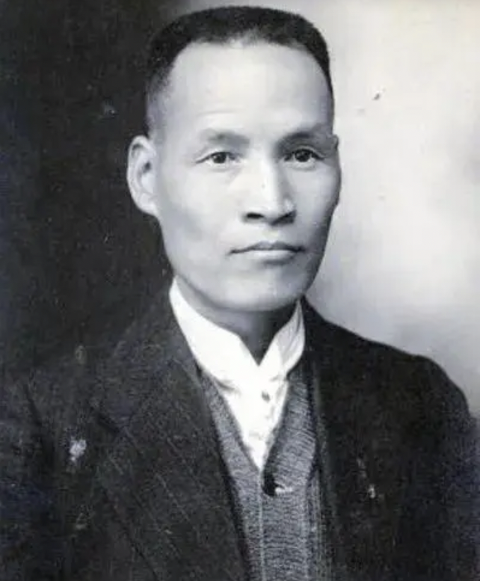
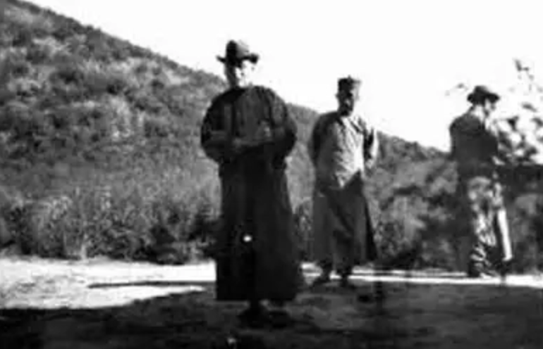
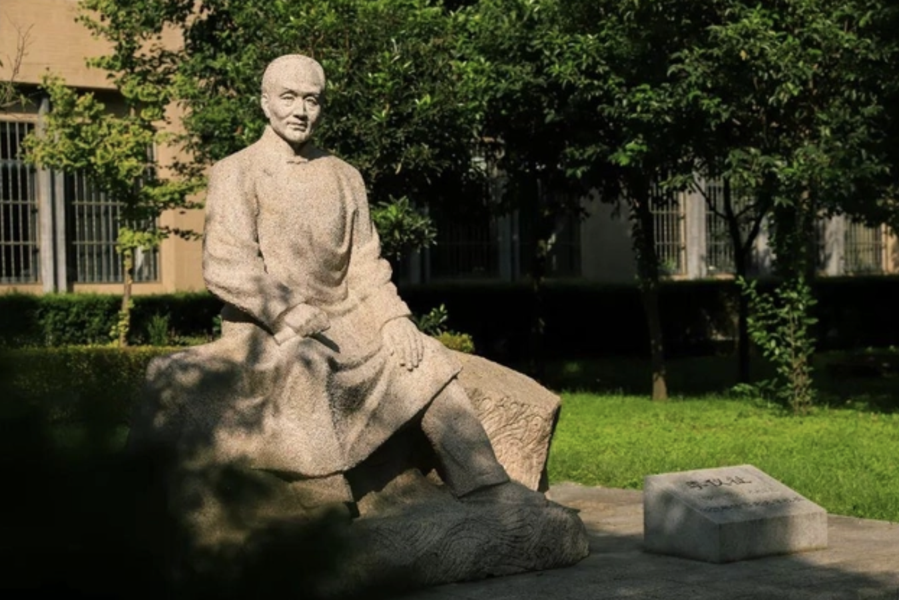

李仪祉：中国近现代水利奠基人
发布时间: 2023-04-03 4354 次浏览
-
1913年，一位怀揣科技救国理想的青年才俊再一次离开生养了他的关中大地，陪同陕西省水利局局长郭希仁遍游了俄、德、法、荷、比、英、瑞等欧洲诸国，考察河流闸堰堤防。在目睹欧洲各国水利事业的发达景象，比较我国水利事业的颓废状况后，他百感交集，立下了专攻水利科学技术，振兴祖国水利事业之鸿志。就在考察团结束行程即将启程归国之时，这位青年做出一个大胆的决定，留在德国，进入德国丹泽工程大学专攻水利专业。这一年，李仪祉刚刚跨过而立之年的门槛。
留学期间，李仪祉学习成绩一直名列前茅。但由于申请学位及参加答辩需要不少费用，为了给国家省钱，他选择不拿学位，认为只要知识学到手，学位不过是个荣誉而已。务实、不重名利，成为他一生事业的真实写照。
两年之后，李仪祉带着学校授予的“特许工程师”荣誉称号回到祖国，协助实业家张謇创办起中国历史上第一所培养水利专门人才的高等学府——南京河海工程专门学校，并主持教务工作，主讲河工学、水文学、大坝设计等课程，培养了中国第一批水利专门人才。
尽管秦淮河的旖旎风光足以让他流连忘返，但千里之外的故土关中更令他魂牵梦绕。1922年，年逾不惑的李仪祉回到陕西，担任了省水利局局长兼渭北水利工程局总工程师。自幼生长在渭北旱原的李仪祉亲眼目睹了干旱给当地民众带来的毁灭性灾难，也萌生了效法郑国、白公，振兴关中水利的夙愿。他积极网罗人才，组织引泾灌溉工程勘测设计，但因经费一直没有着落，直到1927年仍无法开工，李仪祉辞职东去。
陕西在古代之所以被称为“天府关中”，是因为秦时有郑渠，汉时有白渠，引水灌田，民富国强，造就了“秦川自古帝王都”。可是自1929年开始连续五年的大旱灾和瘟疫，使关中从“天堂”变成了“地狱”。田园荒芜，渠道废毁，恢复农业，极需重修水利。
次年，杨虎城主政陕西，力邀李仪祉回陕主持建设大局。也就从那一年冬天开始，一场水利工程大会战在泾河出山口轰轰烈烈打响。一年半后，一道拦河大坝屹立在泾河峡谷中，曾经任性东流的泾河之水被拦入新修的渠网中，流进了干渴的农田。经省政府批准，这条渠以“泾惠”命名，李仪祉也成为当时家喻户晓的名人和楷模。泾惠渠的建成受益，成为中国当时现代化水利工程之典范，在我国水利史上写下了光辉的一页。
1933年，李仪祉奉命筹设黄河水利委员会，并出任第一任委员长。他主张治理黄河要上中下游并重，防洪、航运、灌溉和水电兼顾，改变了几千年来单纯着眼于治理黄河下游的治水思想，把我国治理黄河的理论和方略向前推进了一大步。
在随后的几年里，李仪祉筹划了“关中八惠渠”：泾惠渠、渭惠渠、洛惠渠、梅惠渠、黑惠渠、涝惠渠、沣惠渠、泔惠渠，计划在十年内让水利惠及全省，使陕西成为一个模范农田水利区。至1938年李仪祉逝世，泾、渭、洛、梅四渠已初具规模，灌地180万亩，初步实现了“郑白宏愿”。
如今的泾惠渠水碧波荡漾，两岸的庄稼得水之灌溉，绿意盈盈，长势喜人。李仪祉精心筹划的“关中八惠渠”已基本变为现实，浇灌了一片片干涸的土地，至今造福三秦儿女。而他也被后辈誉为“中国近现代水利奠基人”和“亚洲近代水利科技先驱”。
黄河文化旅游宣传平台
联系电话: 17753010787
版权所有：山东大学技术团队
技术支持：山东大学技术团队